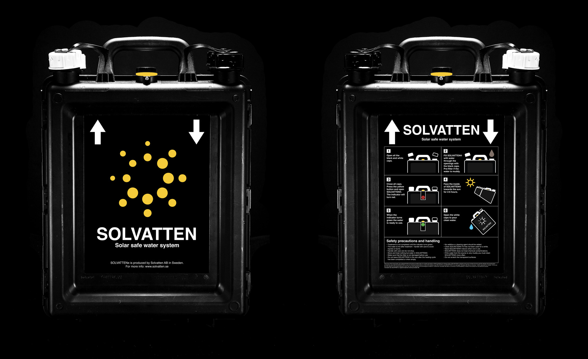

I also created an additional mobile website if something were to happen with the instructions on the container. The mobile site is coded to take as little space as possible since internet connection might not be optimal around the globe. Scroll in the phone above to see the website.
An instruction guide to a portable water treatment and solar water heater system.

Solvatten is a portable container which cleans water though a special UV-filter. The container is designed to be used in a household level in developing countries. The company wanted help with redesigning their current website along with a new instruction manual of how to use the container. Through many iterations and user testing, I created a new instructions that they could have on their container.
My Roles
Art direction, UX/UI-design, graphic design and programming.
Team members
David Anastásio, Helga Hlynsdottir, Jeremy Kiew, Johanna Lindstedt, Amadeus Malmin, David Relan, Angela Rosenberg and me.